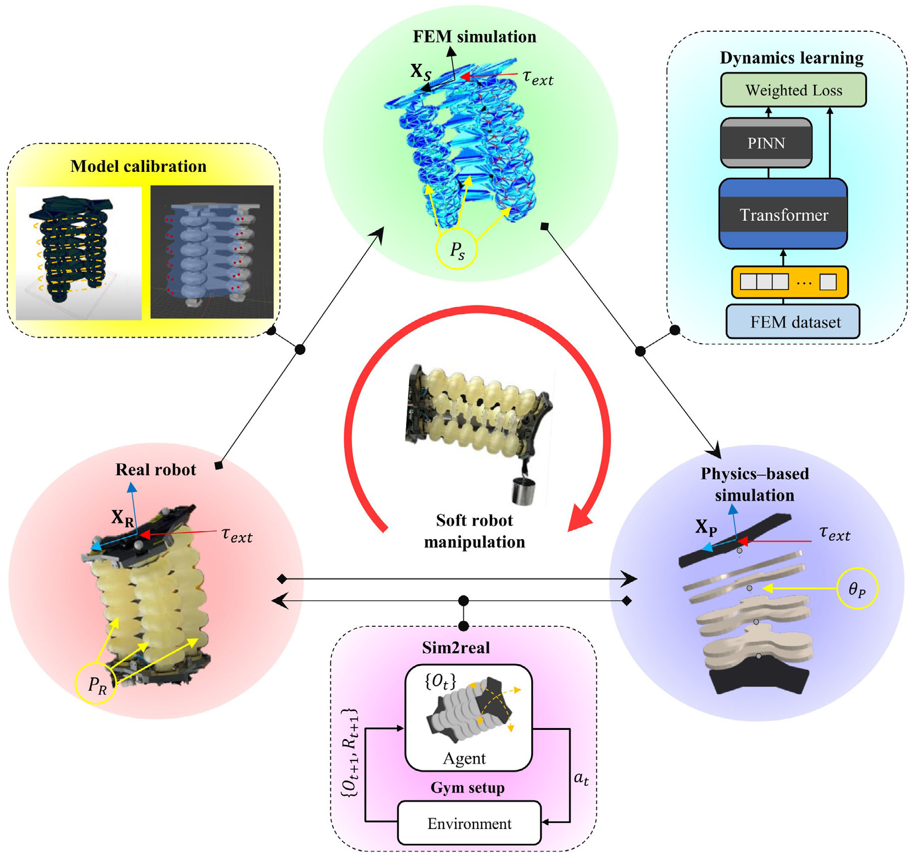
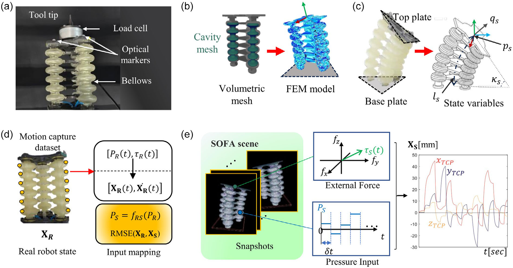
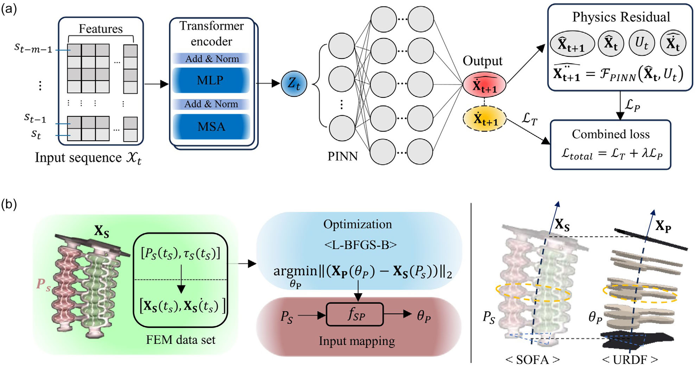
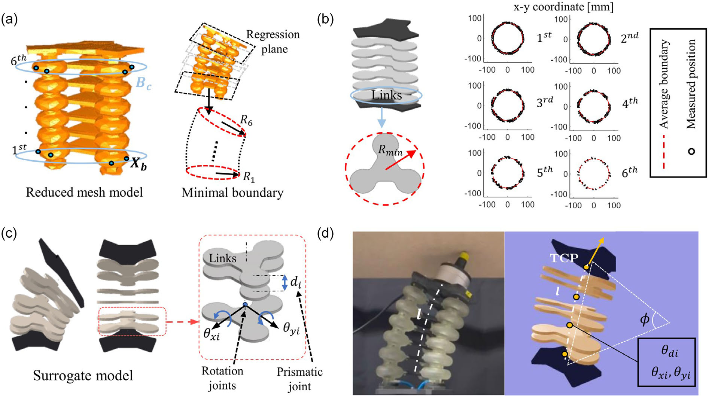
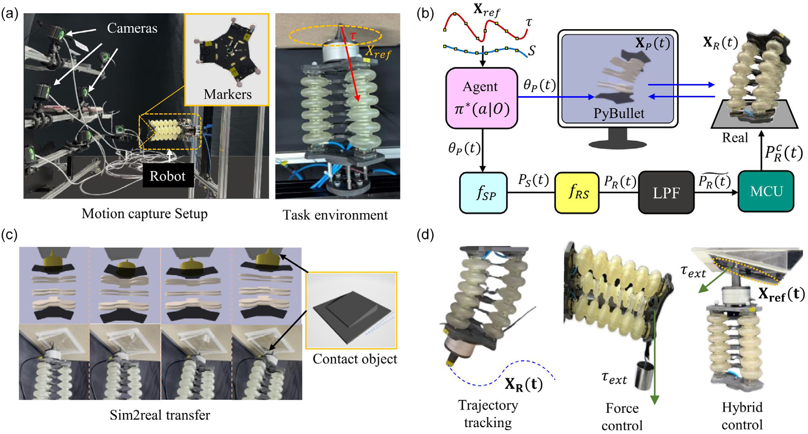
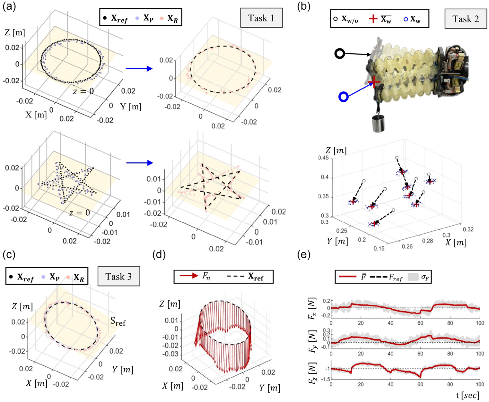
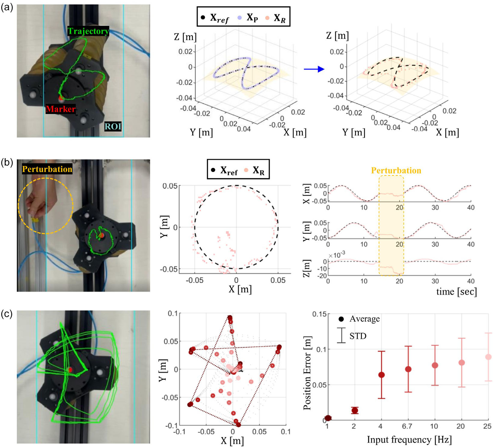

01 / System
System Overview
The framework represents one pneumatic soft manipulator in three connected domains. Physical measurements calibrate a detailed finite-element model in SOFA; its deformation data support dynamics learning and the construction of a jointed surrogate in PyBullet. Reinforcement-learning policies train in the faster physics environment, then learned mappings convert their actions into physical pressure commands. The contribution is the connection between these domains, with each model serving a different role in learning and control.

02 / Motivation
Research Motivation
Soft robots deform continuously, and their motion depends on nonlinear material behavior, geometry, actuation, and contact. A detailed finite-element model can describe those effects but makes the repeated interaction required by reinforcement learning expensive. Exploring directly on hardware creates a different bottleneck: physical experiments take time and can degrade the robot. The study asks which useful dynamics can be retained in a faster control-oriented representation.
The resulting approach combines detailed modeling, learned temporal dynamics, and an articulated physics model. Rather than running the full FEM model inside every policy-training step, it uses calibrated FEM data to inform a lower-dimensional surrogate and mappings between actuation spaces. Evaluation then checks the distinction that matters for deployment: performance inside the surrogate compared with behavior after the policy reaches the physical pneumatic robot.
03 / Design
System Design
A calibrated finite-element reference
Three independently regulated bellows connect a fixed base to a moving top plate. The SOFA model reproduces the cavity geometry and nonlinear deformation, while motion-capture measurements help align physical and simulated actuation. Proper orthogonal decomposition reduces the nodal snapshot representation, retaining important deformation modes and selected tool-center-point and boundary-contact information. This calibrated model supplies the reference data; it is not the environment used for every reinforcement-learning rollout.

Temporal dynamics and actuation-space mappings
A Transformer encoder processes recent state, pressure, and external-force information. A physics-informed neural model predicts Cartesian state velocity, with training combining a data term and a residual from the physical model. Separately, optimization and learned mappings align pressure-driven FEM configurations with joint-driven surrogate configurations. These components connect compatible states and actions across domains; the learned dynamics model and the articulated physics surrogate remain distinct parts of the pipeline.

A six-link physics-based surrogate
The PyBullet surrogate uses six stacked planar links, with revolute and prismatic joints allowing bending and extension. Its dimensions, joint limits, range of motion, and collision boundaries are informed by FEM geometry and deformation. This abstraction makes conventional rigid-body simulation and reinforcement-learning tools usable for the soft manipulator. It approximates the required configuration and contact behavior, while leaving distributed elastic deformation outside its explicit representation.

04 / Method
Methodology
The workflow separates model preparation, policy training, and physical deployment. Calibration links measured robot behavior to FEM responses; simulation then provides data for learning dynamics and actuation mappings. Policies train using the surrogate’s joint-space actions. At deployment, those actions pass through the learned mappings and pressure filtering before reaching the pneumatic regulators, while measured robot state closes the feedback loop. Evaluation preserves the distinction between surrogate and hardware outcomes.
-
Calibrate the physical and FEM models
Use motion capture and pressure-response measurements to align SOFA with the three-bellows hardware.
-
Generate simulation data
Collect FEM snapshots under varied pressure inputs and external loading, then form a reduced representation.
-
Learn dynamics and mappings
Train the temporal physics-informed model and connect pressure actuation with the surrogate’s joint configurations.
-
Train policies in the surrogate
Optimize trajectory and force objectives in the PyBullet environment with its FEM-informed geometry and limits.
-
Transfer and evaluate
Map policy actions to real pressure commands and compare measured hardware behavior with simulated results.
05 / Experiments
Experimental Setup
The physical benchmark uses three pneumatic bellows between rigid plates, optical tracking, and task-specific end-effector tooling. A load cell supports interaction measurements. The real and simulated actuation range is −20 to 35 kPa, and the surrogate uses learned joint commands corresponding to that range. Mirrored task geometry supports comparison between PyBullet and the physical robot rather than treating either output as interchangeable ground truth.
Three main tasks evaluate circular/star trajectory tracking, position response under an applied external load, and a tilted elliptical path with contact-force regulation. Additional hardware experiments test an unseen nonplanar figure-eight trajectory, a temporary pneumatic disconnection, and increasing command frequency. These are distinct evaluations: the 3D path measures generalization, the disconnection probes recovery, and the frequency sweep characterizes a physical rollout limit.

06 / Results
Evaluation & Results
The central comparison is between performance in the surrogate and performance after transfer to the real robot. Table 2 reports mean errors and standard deviations for the three main tasks. Keeping those columns separate makes the transfer gap visible: hardware tracking and force errors are larger than the corresponding simulation values, even when both executions pursue the same reference objective.
Trajectory tracking and hybrid interaction
For circular tracking, the reported position error rises from 1.02 ± 0.61 mm in simulation to 3.38 ± 1.49 mm on hardware; the star path shows a larger transfer gap. The external-load task evaluates position under applied loading. In hybrid control, the robot follows a tilted ellipse while regulating contact force, with real-robot errors of 4.20 ± 1.22 mm in position and 0.70 ± 0.16 N in force.

| Task / quantity | Simulation | Real robot |
|---|---|---|
| Circle · position (mm) | 1.02 ± 0.61 | 3.38 ± 1.49 |
| Star · position (mm) | 1.24 ± 0.50 | 6.79 ± 1.56 |
| External load · position (mm) | 3.20 ± 0.52 | 4.68 ± 1.77 |
| Hybrid · position (mm) | 1.35 ± 0.43 | 4.20 ± 1.22 |
| Hybrid · force (N) | 0.55 ± 0.19 | 0.70 ± 0.16 |
Generalization, recovery, and hardware bandwidth
An unseen nonplanar figure-eight trajectory produced a real-robot average tracking error of 5.34 ± 0.38 mm. In a separate circular-tracking experiment, one pneumatic line was disconnected for five seconds; the robot returned to the reference path within about five seconds after reconnection. A further point-to-point frequency sweep showed sharply increased hardware tracking error above approximately 2 Hz. That bandwidth limit concerns the pneumatic system, rather than the simulator or policy-inference rate.

07 / Discussion
Discussion & Limitations
The experiments show that policies trained with the physics-based surrogate can transfer to this pneumatic platform for the evaluated motion and contact tasks. They also expose the remaining gap: physical errors exceed surrogate errors, with unmodeled hysteresis, material friction, and actuation latency contributing to discrepancies. The linked surrogate does not explicitly reproduce distributed elastic compliance, and a deterministic inverse mapping may be sensitive to uncertain loading or sensor noise.
The approximately 2 Hz hardware bottleneck is especially relevant to interpreting “fast” simulation. Faster training or policy inference does not remove pneumatic response limits, and the paper does not establish unrestricted high-speed physical control. Extending contact fidelity, testing broader loading conditions, and applying the framework to other soft-robot architectures remain directions for further work. The reported generalization and recovery results should be read within the specific tasks and disturbances tested.
08 / Resources
Resources & Citation
T. Hong, J. Lee, B.-H. Song, and Y.-L. Park. “Bridging High-Fidelity Simulations and Physics-Based Learning using a Surrogate Model for Soft Robot Control.” Advanced Intelligent Systems 8(2), e202500696 (2026). First published online October 30, 2025. doi:10.1002/aisy.202500696.
@article{hong2026bridging,
author = {Hong, Taehwa and Lee, Jungjae and Song, Byung-Hyun and Park, Yong-Lae},
title = {Bridging High-Fidelity Simulations and Physics-Based Learning using a Surrogate Model for Soft Robot Control},
journal = {Advanced Intelligent Systems},
year = {2026},
volume = {8},
number = {2},
pages = {e202500696},
doi = {10.1002/aisy.202500696},
url = {https://doi.org/10.1002/aisy.202500696}
}- Publisher article and supporting information
- Author-hosted publisher PDF
- Maintained code and data repository
- Original paper repository, which directs readers to the maintained version
Complete figures are reproduced from Hong et al., Advanced Intelligent Systems, 8, e202500696 (2026; first online 2025), under CC BY 4.0. No figure panels, labels, axes, or data have been altered.